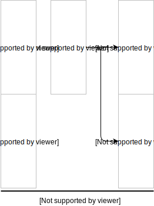
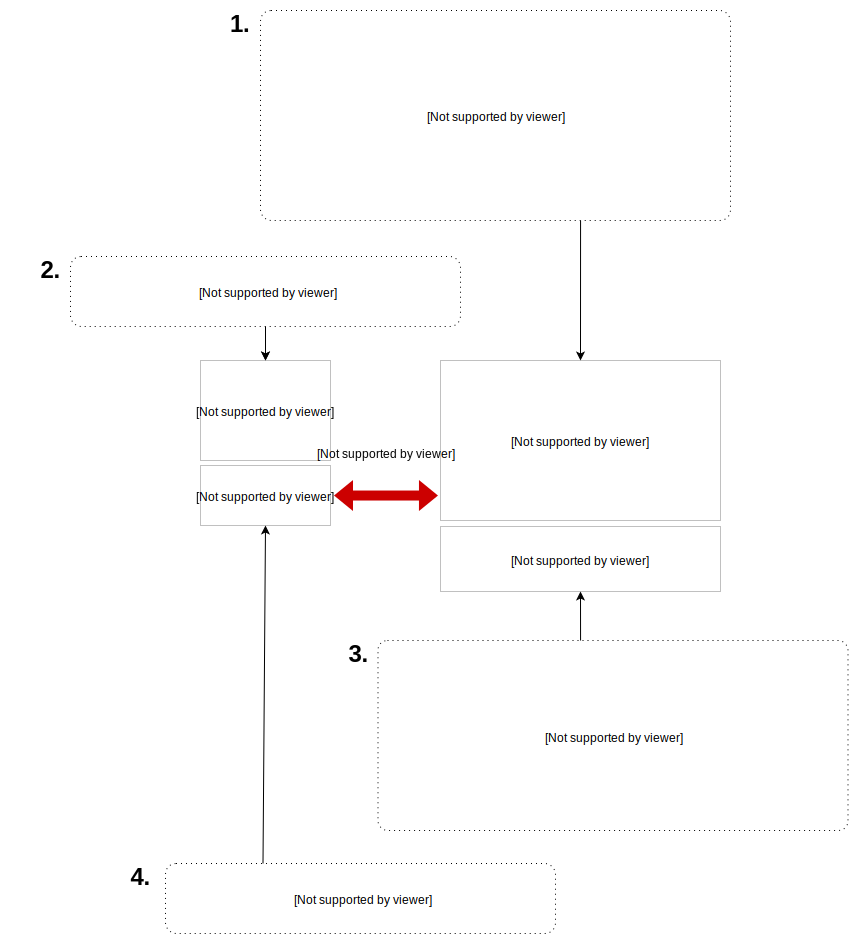
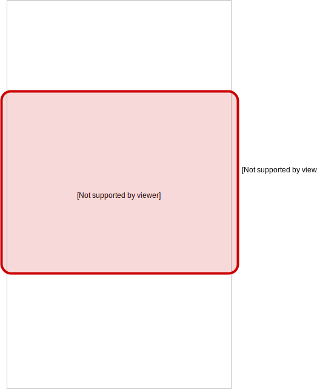
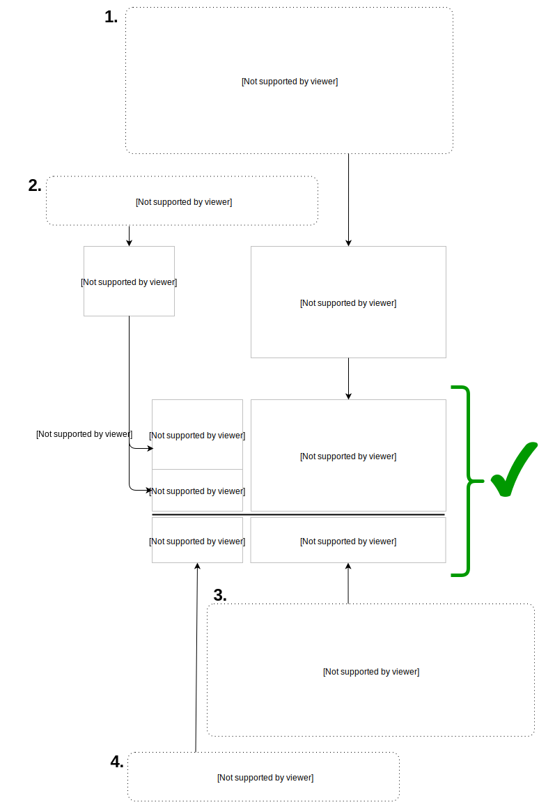

Extract Stage¶
The extract stage does 3 main things:
- Select or extract the desired subset of data from the source data files
- Clean the selected data (remove trailing whitespaces, etc)
- Map the cleaned data’s attributes and values to Kids First entity attributes and acceptable values.
The extract configuration files instruct the extract stage how to accomplish the above.
Example Extract Configuration¶
Every data file provided by the investigator will require at least one extract configuration file. The reasons why will hopefully become clear after reading this section.
We will step through how to write an extract configuration file for a source data file.
Here’s an example source data file:¶
| [ignore] | [ignore] | [ignore] | [ignore] | [ignore] | [ignore] | [ignore] | [ignore] | [ignore] | [ignore] | [ignore] |
| [ignore] | participant | mother | father | gender | specimens | age (hrs) | CLEFT_EGO | CLEFT_ID | age (hrs) | EXTRA_EARDRUM |
| [ignore] | PID001 | 2 | 3 | F | SP001A,SP001B | 4 | TRUE | FALSE | 4 | FALSE |
| [ignore] | PID002 | SP002A; SP002B | 435 | TRUE | FALSE | 435 | FALSE | |||
| [ignore] | PID003 | SP003A;SP003B | 34 | TRUE | FALSE | 34 | FALSE | |||
| [ignore] | PID004 | 5 | 6 | M | SP004A; SP004B | 4 | TRUE | TRUE | 4 | FALSE |
| [ignore] | PID005 | SP005A, SP005B | 345 | TRUE | TRUE | 34 | FALSE | |||
| [ignore] | PID006 | SP006 | 34 | TRUE | TRUE | 43545 | FALSE | |||
| [ignore] | PID007 | 8 | 9 | M | SP007 | 34 | TRUE | FALSE | 5 | TRUE |
| [ignore] | PID008 | SP008A,SP008B | 43545 | TRUE | TRUE | 52 | TRUE | |||
| [ignore] | PID009 | SP009A,SP009B | 5 | FALSE | TRUE | 25 | TRUE |
You can download/copy this file if you want to view it directly or test local data file loading instead of remote as you go through this tutorial.
In order to ingest this data into the Kids First ecosystem, we need to:¶
- Ignore everything marked with [ignore], meaning our table actually starts at the second row and second column
- Convert the column headers into a standardized set of conepts that the
toolchain can understand. The values are defined in the Standard Concept
Schema located in
kf_lib_data_ingest.common.concept_schema.CONCEPT - Unify the formats of the participant IDs and the mother/father IDs
- Convert the M and F in the gender column to standardized values for
Male/Female, because we want to use standard constant codes wherever
possible. Our constants are located in
kf_lib_data_ingest.common.constants - Split delimited specimens apart into their own rows
- Convert age (hrs) to age in days
- Reshape the CLEFT_EGO, CLEFT_ID, and EXTRA_EARDRUM columns into observation events
- Convert the TRUE and FALSE strings into standardized observation codes
The following extract configuration file accomplishes all of those needs¶
(We will explain how each piece works after showing the whole thing)
import re
from kf_lib_data_ingest.common import constants
from kf_lib_data_ingest.common.concept_schema import CONCEPT
from kf_lib_data_ingest.common.pandas_utils import Split
from kf_lib_data_ingest.etl.extract.operations import *
source_data_url = "https://raw.githubusercontent.com/kids-first/kf-lib-data-ingest/master/docs/data/family_and_phenotype.tsv"
source_data_read_params = {
"header": 1,
"usecols": lambda x: x != "[ignore]"
}
def observed_yes_no(x):
if isinstance(x, str):
x = x.lower()
if x in {"true", "yes", 1}:
return constants.PHENOTYPE.OBSERVED.YES
elif x in {"false", "no", 0}:
return constants.PHENOTYPE.OBSERVED.NO
elif x in {"", None}:
return None
operations = [
value_map(
in_col="participant",
m={
r"PID(\d+)": lambda x: int(x), # strip PID and 0-padding
},
out_col=CONCEPT.PARTICIPANT.ID
),
keep_map(
in_col="mother",
out_col=CONCEPT.PARTICIPANT.MOTHER_ID
),
keep_map(
in_col="father",
out_col=CONCEPT.PARTICIPANT.FATHER_ID
),
value_map(
in_col="gender",
# Don't worry about mother/father gender here.
# We can create them in a later phase.
m={
"F": constants.GENDER.FEMALE,
"M": constants.GENDER.MALE
},
out_col=CONCEPT.PARTICIPANT.GENDER
),
value_map(
in_col="specimens",
m=lambda x: Split(re.split("[,;]", x)),
out_col=CONCEPT.BIOSPECIMEN.ID
),
[
value_map(
in_col=6, # age (hrs) (first)
m=lambda x: int(x) / 24,
out_col=CONCEPT.PHENOTYPE.EVENT_AGE_DAYS
),
melt_map(
var_name=CONCEPT.PHENOTYPE.NAME,
map_for_vars={
"CLEFT_EGO": "Cleft ego",
"CLEFT_ID": "Cleft id"
},
value_name=CONCEPT.PHENOTYPE.OBSERVED,
map_for_values=observed_yes_no
)
],
[
value_map(
in_col=9, # age (hrs) (second)
m=lambda x: int(x) / 24,
out_col=CONCEPT.PHENOTYPE.EVENT_AGE_DAYS
),
melt_map(
var_name=CONCEPT.PHENOTYPE.NAME,
map_for_vars={
"EXTRA_EARDRUM": "Extra eardrum"
},
value_name=CONCEPT.PHENOTYPE.OBSERVED,
map_for_values=observed_yes_no
)
]
]
It goes in the extract_configs directory like this:
my_study/
├── data
└── extract_configs
└── family_and_phenotype.py
Now let’s break down how it works…
Imports!¶
import re
from kf_lib_data_ingest.common import constants
from kf_lib_data_ingest.common.concept_schema import CONCEPT
from kf_lib_data_ingest.common.pandas_utils import Split
from kf_lib_data_ingest.etl.extract.operations import *
It’s a Python module! Cool! That lets us do all kinds of neat stuff like import predefined constants and functions.
Fetching the data¶
source_data_url = "https://raw.githubusercontent.com/kids-first/kf-lib-data-ingest/master/docs/data/family_and_phenotype.tsv"
The first thing that the extractor does for every config file is fetch the related source data. This specifies where the file lives so that the code can fetch it.
Supported protocol prefixes are:
file://, s3://, http://, https://
For files stored by the Kids First Study Creator, see the Source Data stored by the Kids First Data Tracker tutorial.
If you downloaded the test data file and want to load your local copy instead of from a remote server, you would use:
source_data_url = "file://path/to/family_and_phenotype.tsv"
Reading the file¶
source_data_read_params = {
"header": 1,
"usecols": lambda x: x != "[ignore]"
}
Extract tries to automatically pick the right pandas file reader for the given
file extension (read_json for json files, read_csv for csv/tsv, read_excel for
excel files). To pass keyword arguments to the chosen file reader, we define a
dict called source_data_read_params which corresponds with the
Python pandas IO parameters described in
http://pandas.pydata.org/pandas-docs/stable/user_guide/io.html
The example data file contains tab-separated values (hence the filename ending with “.tsv”) with a non-standard layout where we need to ignore the first row. For demonstration purposes we’re also ignoring the first column.
If the data had had the simplest layout (the column headers being on the first row, etc), then it would get loaded correctly by default without needing any parameters here, but with complex arrangements we have to configure the reader.
Extract operations¶
The operations list¶
operations = [
...
]
This is a list of special functions that the extract stage will execute to select subsets of source data and then clean and map that data to the desired attributes and value formats. The most useful functions are already written for you. You just have to invoke them appropriately.
For more information about extract operation functions, read Predefined Mapping Operations.
A value map operation with functional replacements¶
value_map(
in_col="participant",
m={
r"PID(\d+)": lambda x: int(x), # strip PID and 0-padding
},
out_col=CONCEPT.PARTICIPANT.ID
)
This says “Use the "participant" column as input, replace everything that
matches (m={...}) the regular expression pattern ^PID(\d+)$ with just
the captured part and remove the zero padding by running the captured part
through the function lambda x: int(x), and then output the result to a
standard concept column for the participant ID.”
The resulting intermediate output will look like:
| index | <CONCEPT.PARTICIPANT.ID> |
|---|---|
| 0 | 1 |
| 1 | 2 |
| 2 | 3 |
| 3 | 4 |
| 4 | 5 |
| 5 | 6 |
| 6 | 7 |
| 7 | 8 |
| 8 | 9 |
lambda x: int(x) could be replaced by just int, since the two
expressions are functionally equivalent (both single-argument functions that
effectively strip the leading zeros).
We could also have kept these IDs as they were and instead converted the mother/father IDs, but, in the absence of an overriding directive such as input from the investigators about their preferences, it doesn’t really make a difference which way we choose.
A keep-the-original-values map operation¶
keep_map(
in_col="mother",
out_col=CONCEPT.PARTICIPANT.MOTHER_ID
)
This says “Put all of the values from the "mother" column into a standard
concept column for the ID of the participant’s mother, but keep all of the
values the same.” keep_map is the same as a value_map where every value
is mapped to itself.
The resulting intermediate output will look like:
| index | <CONCEPT.PARTICIPANT.MOTHER_ID> |
|---|---|
| 0 | 2 |
| 1 | |
| 2 | |
| 3 | 5 |
| 4 | |
| 5 | |
| 6 | 8 |
| 7 | |
| 8 |
A value map operation with variable replacements¶
value_map(
in_col="gender",
m={
"F": constants.GENDER.FEMALE,
"M": constants.GENDER.MALE
},
out_col=CONCEPT.PARTICIPANT.GENDER
)
This says “Use the gender column as input, replace everything that matches
the regular expression pattern ^F$ with the standard code for Female and
replace everything that matches ^M$ with the standard code for Male, and
then output the result to a standard concept column for participant gender.”
The resulting intermediate output will look like:
| index | <CONCEPT.PARTICIPANT.ID> |
|---|---|
| 0 | Female |
| 1 | |
| 2 | |
| 3 | Male |
| 4 | |
| 5 | |
| 6 | Male |
| 7 | |
| 8 |
A value map that splits cells apart¶
value_map(
in_col="specimens",
m=lambda x: Split(re.split("[,;]", x)),
out_col=CONCEPT.BIOSPECIMEN.ID
)
This says “Use the specimens column as input, split any , or ;
delimited values apart into their own entries, and then output the result to a
standard concept column for biospecimen ID.”
Note
We use the special Split() object for lists of values that we want to
split apart into multiple rows. Just returning a list will not split the
contained items apart. Read Splitting Cells.
The resulting intermediate output will look like:
| index | <CONCEPT.BIOSPECIMEN.ID> |
|---|---|
| 0 | SP001A |
| 0 | SP001B |
| 1 | SP002A |
| 1 | SP002B |
| 2 | SP003A |
| 2 | SP003B |
| 3 | SP004A |
| 3 | SP004B |
| 4 | SP005A |
| 4 | SP005B |
| 5 | SP006 |
| 6 | SP007 |
| 7 | SP008A |
| 7 | SP008B |
| 8 | SP009A |
| 8 | SP009B |
| 0 | SP001A |
| 0 | SP001B |
| 1 | SP002A |
| 1 | SP002B |
| 2 | SP003A |
| 2 | SP003B |
| 3 | SP004A |
| 3 | SP004B |
| 4 | SP005A |
| 4 | SP005B |
| 5 | SP006 |
| 6 | SP007 |
| 7 | SP008A |
| 7 | SP008B |
| 8 | SP009A |
| 8 | SP009B |
| 0 | SP001A |
| 0 | SP001B |
| 1 | SP002A |
| 1 | SP002B |
| 2 | SP003A |
| 2 | SP003B |
| 3 | SP004A |
| 3 | SP004B |
| 4 | SP005A |
| 4 | SP005B |
| 5 | SP006 |
| 6 | SP007 |
| 7 | SP008A |
| 7 | SP008B |
| 8 | SP009A |
| 8 | SP009B |
A melt map operation¶
melt_map(
var_name=CONCEPT.PHENOTYPE.NAME,
map_for_vars={
"CLEFT_EGO": "Cleft ego",
"CLEFT_ID": "Cleft id"
},
value_name=CONCEPT.PHENOTYPE.OBSERVED,
map_for_values=observed_yes_no
)
This says “Generate new standard concept columns for phenotype name and
observation by melting (read
https://pandas.pydata.org/pandas-docs/stable/reference/api/pandas.melt.html)
the CLEFT_EGO and CLEFT_ID columns into the variables Cleft ego
and Cleft id and map the TRUE/FALSE values by passing them
through the included observed_yes_no function.”
The resulting intermediate output will look like:
| index | <CONCEPT.PHENOTYPE.NAME> | <CONCEPT.PHENOTYPE.OBSERVED> |
|---|---|---|
| 0 | Cleft ego | Positive |
| 1 | Cleft ego | Positive |
| 2 | Cleft ego | Positive |
| 3 | Cleft ego | Positive |
| 4 | Cleft ego | Positive |
| 5 | Cleft ego | Positive |
| 6 | Cleft ego | Positive |
| 7 | Cleft ego | Positive |
| 8 | Cleft ego | Negative |
| 0 | Cleft id | Negative |
| 1 | Cleft id | Negative |
| 2 | Cleft id | Negative |
| 3 | Cleft id | Positive |
| 4 | Cleft id | Positive |
| 5 | Cleft id | Positive |
| 6 | Cleft id | Negative |
| 7 | Cleft id | Positive |
| 8 | Cleft id | Positive |
A nested operation sub-list¶
[
value_map(
in_col=6, # age (hrs) (first)
m=lambda x: int(x) / 24,
out_col=CONCEPT.PHENOTYPE.EVENT_AGE_DAYS
),
melt_map(
var_name=CONCEPT.PHENOTYPE.NAME,
map_for_vars={
"CLEFT_EGO": "Cleft ego",
"CLEFT_ID": "Cleft id"
},
value_name=CONCEPT.PHENOTYPE.OBSERVED,
map_for_values=observed_yes_no
)
]
Having a sub-list says “Treat the enclosed operations as a single logically-linked unit”.
For this particular scenario it gives a way to say that these phenotype columns go with this age column and not that other age column. It should also always be possible to accomplish the same thing by making a separate extract configuration file for those operations.
The resulting intermediate output for both of these operations together will look like:
| index | <CONCEPT.PHENOTYPE.EVENT_AGE_DAYS> | <CONCEPT.PHENOTYPE.NAME> | <CONCEPT.PHENOTYPE.OBSERVED> |
|---|---|---|---|
| 0 | 0.166667 | Cleft ego | Positive |
| 1 | 18.125 | Cleft ego | Positive |
| 2 | 1.416667 | Cleft ego | Positive |
| 3 | 0.166667 | Cleft ego | Positive |
| 4 | 14.375 | Cleft ego | Positive |
| 5 | 1.416667 | Cleft ego | Positive |
| 6 | 1.416667 | Cleft ego | Positive |
| 7 | 1814.375 | Cleft ego | Positive |
| 8 | 0.208333 | Cleft ego | Negative |
| 0 | 0.166667 | Cleft id | Negative |
| 1 | 18.125 | Cleft id | Negative |
| 2 | 1.416667 | Cleft id | Negative |
| 3 | 0.166667 | Cleft id | Positive |
| 4 | 14.375 | Cleft id | Positive |
| 5 | 1.416667 | Cleft id | Positive |
| 6 | 1.416667 | Cleft id | Negative |
| 7 | 1814.375 | Cleft id | Positive |
| 8 | 0.208333 | Cleft id | Positive |
The final Extraction product¶
Once all of the operations are complete and the extract stage has done its magic, the final extracted result given the data and our configuration is:
| index | <CONCEPT.PARTICIPANT.ID> | <CONCEPT.PARTICIPANT.MOTHER_ID> | <CONCEPT.PARTICIPANT.FATHER_ID> | <CONCEPT.PARTICIPANT.GENDER> | <CONCEPT.BIOSPECIMEN.ID> | <CONCEPT.PHENOTYPE.EVENT_AGE_DAYS> | <CONCEPT.PHENOTYPE.NAME> | <CONCEPT.PHENOTYPE.OBSERVED> |
|---|---|---|---|---|---|---|---|---|
| 0 | 1 | 2 | 3 | Female | SP001A | 0.166666667 | Cleft ego | Positive |
| 0 | 1 | 2 | 3 | Female | SP001B | 0.166666667 | Cleft ego | Positive |
| 1 | 2 | SP002A | 18.125 | Cleft ego | Positive | |||
| 1 | 2 | SP002B | 18.125 | Cleft ego | Positive | |||
| 2 | 3 | SP003A | 1.416666667 | Cleft ego | Positive | |||
| 2 | 3 | SP003B | 1.416666667 | Cleft ego | Positive | |||
| 3 | 4 | 5 | 6 | Male | SP004A | 0.166666667 | Cleft ego | Positive |
| 3 | 4 | 5 | 6 | Male | SP004B | 0.166666667 | Cleft ego | Positive |
| 4 | 5 | SP005A | 14.375 | Cleft ego | Positive | |||
| 4 | 5 | SP005B | 14.375 | Cleft ego | Positive | |||
| 5 | 6 | SP006 | 1.416666667 | Cleft ego | Positive | |||
| 6 | 7 | 8 | 9 | Male | SP007 | 1.416666667 | Cleft ego | Positive |
| 7 | 8 | SP008A | 1814.375 | Cleft ego | Positive | |||
| 7 | 8 | SP008B | 1814.375 | Cleft ego | Positive | |||
| 8 | 9 | SP009A | 0.208333333 | Cleft ego | Negative | |||
| 8 | 9 | SP009B | 0.208333333 | Cleft ego | Negative | |||
| 0 | 1 | 2 | 3 | Female | SP001A | 0.166666667 | Cleft id | Negative |
| 0 | 1 | 2 | 3 | Female | SP001B | 0.166666667 | Cleft id | Negative |
| 1 | 2 | SP002A | 18.125 | Cleft id | Negative | |||
| 1 | 2 | SP002B | 18.125 | Cleft id | Negative | |||
| 2 | 3 | SP003A | 1.416666667 | Cleft id | Negative | |||
| 2 | 3 | SP003B | 1.416666667 | Cleft id | Negative | |||
| 3 | 4 | 5 | 6 | Male | SP004A | 0.166666667 | Cleft id | Positive |
| 3 | 4 | 5 | 6 | Male | SP004B | 0.166666667 | Cleft id | Positive |
| 4 | 5 | SP005A | 14.375 | Cleft id | Positive | |||
| 4 | 5 | SP005B | 14.375 | Cleft id | Positive | |||
| 5 | 6 | SP006 | 1.416666667 | Cleft id | Positive | |||
| 6 | 7 | 8 | 9 | Male | SP007 | 1.416666667 | Cleft id | Negative |
| 7 | 8 | SP008A | 1814.375 | Cleft id | Positive | |||
| 7 | 8 | SP008B | 1814.375 | Cleft id | Positive | |||
| 8 | 9 | SP009A | 0.208333333 | Cleft id | Positive | |||
| 8 | 9 | SP009B | 0.208333333 | Cleft id | Positive | |||
| 0 | 1 | 2 | 3 | Female | SP001A | 0.166666667 | Extra eardrum | Negative |
| 0 | 1 | 2 | 3 | Female | SP001B | 0.166666667 | Extra eardrum | Negative |
| 1 | 2 | SP002A | 18.125 | Extra eardrum | Negative | |||
| 1 | 2 | SP002B | 18.125 | Extra eardrum | Negative | |||
| 2 | 3 | SP003A | 1.416666667 | Extra eardrum | Negative | |||
| 2 | 3 | SP003B | 1.416666667 | Extra eardrum | Negative | |||
| 3 | 4 | 5 | 6 | Male | SP004A | 0.166666667 | Extra eardrum | Negative |
| 3 | 4 | 5 | 6 | Male | SP004B | 0.166666667 | Extra eardrum | Negative |
| 4 | 5 | SP005A | 1.416666667 | Extra eardrum | Negative | |||
| 4 | 5 | SP005B | 1.416666667 | Extra eardrum | Negative | |||
| 5 | 6 | SP006 | 1814.375 | Extra eardrum | Negative | |||
| 6 | 7 | 8 | 9 | Male | SP007 | 0.208333333 | Extra eardrum | Positive |
| 7 | 8 | SP008A | 2.166666667 | Extra eardrum | Positive | |||
| 7 | 8 | SP008B | 2.166666667 | Extra eardrum | Positive | |||
| 8 | 9 | SP009A | 1.041666667 | Extra eardrum | Positive | |||
| 8 | 9 | SP009B | 1.041666667 | Extra eardrum | Positive |
Preprocessing Before the Operations List¶
Source data can’t always be mapped right away, or perhaps your preferred mapping operations require an initial pre-processing step, like e.g. transposing the table to turn rows into columns.
Initial manipulations can be done in a do_after_read function that you may
optionally define in your extract configuration file like this:
# This function will be called before performing the mapping operations list.
def do_after_read(df):
# do something with df
return new_df
Files That Need Custom Readers¶
Source data can’t always be read automatically by the default tabular read functions. We provide readers for CSV/TSV/Excel sheets, but maybe the data you need is embedded in a PDF or PowerPoint file.
If the right reader cannot be automatically inferred, you can define a custom
function called source_data_read_func that takes a local file path and
keyword arguments (also given in source_data_read_params) and returns a
pandas DataFrame:
# a special custom file reader which must return a pandas DataFrame
def source_data_read_func(filepath, **kwargs):
return my_df
Predefined Mapping Operations¶
Note
Mapping operations share common input parameters m, in_col, and
out_col.
in_col: The name or numerical index of the column in the input data file.
out_col: The name of the standard concept to use for the output column in
the DataFrame containing extracted data.
m: The magic (or the “map”). Depending on the mapping operation, this
will be a dict, function, or constant value.
Keep Map¶
def keep_map(in_col, out_col):
The keep_map operation copies all of the values from in_col to
out_col without modifying the values.
keep_map is a special case of value_map with m=lambda x: x.
Constant Map¶
def constant_map(m, out_col):
The constant_map operation writes N iterations of constant value m
to out_col, where N is the number of rows in the source data table.
constant_map is a special case of value_map with m=lambda x: <some
constant>.
Value Map¶
def value_map(m, in_col, out_col):
The value_map operation takes values from in_col,
performs some transformation m on them, and then writes the
result to out_col in your result dataframe.
m can be a function, dict, or regex pattern string:
- If it’s a function, the returned column values will be the result of applying
that function to each value in
in_col. - If it’s a dict, each key is a regex pattern string, and each value is either
a direct replacement or a function applied to values in
in_colmatching the pattern. - If it’s a regex pattern string, the result is the same as if it had been
{m: lambda x: x}.
Note
- Regex patterns without
^and$anchors will have them automatically added. mdict regex pattern matches are checked in order, and values fromin_colare each only matched once, so{"a": "b", "b": "c"}will never convert “a” into “c”.- If a regex pattern includes capture groups, the receiving function will receive only the captures instead of the whole cell value.
Row Map¶
def row_map(m, out_col):
The row_map operation lets you build a single output column using data from
across entire rows of source data when your output column needs to combine data
from multiple cells in the row. m is a function that takes an entire row as
input and returns a single value using values from that row.
Column Map¶
def column_map(m, in_col, out_col):
The column_map operation lets you pass an entire column of data into a
custom function m which returns a new column (of the same length) as the
result.
Note
Needing to use column_map is a sign that the original data is
poorly constructed.
Melt Map¶
def melt_map(var_name, map_for_vars, value_name, map_for_values):
The melt_map operation combines the pandas melt function and the
value_map operation. It both reshapes data and maps values.
var_nameis the melt’s resulting var column name.map_for_varsis a dict with keys equal to column names or numeric indices from the source data and values equal to replacement var names.value_nameis the melt’s resulting value column name.map_for_valuesis the same asvalue_map’sm.
Note
Any use of melt_map can be replaced by multiple uses of value_map
with appropriate column stacking.
DF Map¶
def df_map(m):
The df_map operation is for when you just can’t figure out how to do what
you want to do with the other predefined operations. Take a whole DataFrame,
perform some function m on it, and return a new DataFrame of the same size.
Note
Needing to use df_map is a sign that the original data is poorly
constructed.
Important Strategic Details¶
Avoid Hard-coded Strings¶
Avoid using hard-coded strings for output column headers and values. As much as
possible, favor variables in common.constants for cell values and variables
in common.concept_schema.CONCEPT for out_col assignment. That way
everyone has the chance to use the same shared set of values.
Repeated Information¶
Multiple identical declarations don’t add new information and therefore don’t matter. They also don’t hurt anything. This table means exactly the same thing as if it had only one row:
| Participant ID | Specimen ID | Participant Age | Participant Sex | Participant Race |
|---|---|---|---|---|
| P1 | S1 | 7 | m | unknown |
| P1 | S1 | 7 | m | unknown |
You Don’t Need To Extract The Whole Document All At Once¶
If creating multiple extraction configurations for a single source data file to generate multiple smaller tables during Extract that can be manipulated in a Transform function is easier for you than making one complex table for the whole data file, then do it. If not, that’s fine too.
Parallel Column Stacking¶
If the same out_col is used multiple times, the column output from
successive operations will be vertically concatenated.
Length Rectification¶
The length disparity between output columns produced by Parallel Column Stacking is then rectified by least-common-multiple repetition of output columns which gives a final result that preserves row colinearity from the original source data. Note in the next image that A is inline with A, B is inline with B, etc.
Caution
The lengths of all output columns must be multiples of the original source data length. If they aren’t, the library will raise an error.
Splitting Cells¶
Sometimes you will have source documents that lump multiple distinct values into the same table cell. For instance, study participants might have multiple specimens reported together as follows:
| Participant | Specimens |
|---|---|
| P1 | SP1a/SP1b |
| P2 | SP2 |
| P3 | SP3a/SP3b/SP3c |
Because of the practical implications of the Value Principles,
you will want to have independent associations (P1, SP1a), (P1, SP1b), etc, so
you need to separate the “/”-delimited specimen values into separate entries.
Replacing each of the Specimens cells with the appropriate Split object
will tell the Extract Stage to do the right thing.
The Split Object¶
The Split object (common.pandas_utils.Split) is instantiated with a
list of values and optionally a group ID. After all of the extract mapping
operations are finished, any Split objects found in your output will trigger a
“split” of the row into multiple rows with identical non-Split cells and each
with a different value from among the Split members.
For instance, from:
| A | B | C |
|---|---|---|
| Split([1, 2, 3]) | Split([4, 5, 6]) | 7 |
to:
| A | B | C |
|---|---|---|
| 1 | 4 | 7 |
| 1 | 5 | 7 |
| 1 | 6 | 7 |
| 2 | 4 | 7 |
| 2 | 5 | 7 |
| 2 | 6 | 7 |
| 3 | 4 | 7 |
| 3 | 5 | 7 |
| 3 | 6 | 7 |
Without groups, multiple Splits on the same row will multiply to produce the cartesian product of the values in those Splits. However, if Splits are assigned a group value, then Splits on the same row in the same group will be linked to each other so that they do not form a cartesian product with each other.
| A | B | C |
|---|---|---|
| Split([8, 9], group=1) | Split([10, 11, 12], group=1) | 13 |
to:
| A | B | C |
|---|---|---|
| 8 | 10 | 13 |
| 9 | 11 | 13 |
| None | 12 | 13 |
And if you combine both of these forms together, you go from:
| A | B | C |
|---|---|---|
| Split([1, 2], group=1) | Split([3, 4, 5], group=1) | Split([6, 7]) |
to:
| A | B | C |
|---|---|---|
| 1 | 3 | 6 |
| 2 | 4 | 6 |
| None | 5 | 6 |
| 1 | 3 | 7 |
| 2 | 4 | 7 |
| None | 5 | 7 |
Going back to the participants and specimens example, you might use a Split
object as part of a value_map operation like this:
value_map(
in_col="Specimens",
out_col="<example_output_col>",
m=lambda x: Split(x.split("/"))
)
Note
Interpretation of Split objects happens after all the mapping
operations are complete, so the newly created rows will not be affected by
the length-multiple restriction cautioned in Parallel Column Stacking.
Nested Operations Sublists¶
You can nest groups of operations inside of sublists to do length rectification on just the group before joining it with the rest of the operations output.
It looks like this:
operations = [
[
# operations group 1
],
[
# operations group 2
],
# etc
]
The reason for doing this is that Parallel Column Stacking can lead to row mismatch problems in scenarios where several columns form logical groups with each other and the mapping operations don’t all produce the same length output.
Consider the situation of extracting KFDRC phenotypes from:
| Participant | Age | Mass | Cleft Ear | Mass/Cleft Age | Tennis Fingers | Tennis Age |
|---|---|---|---|---|---|---|
| P1 | 70 | yes | yes | 60 | no | 65 |
| P2 | 80 | no | yes | 80 | no | 45 |
Note that there are two different groups of phenotype measurements recorded at different ages.
A naïve and incorrect approach would be to do this:
operations = [
melt_map(
var_name=CONCEPT.PHENOTYPE.NAME,
map_for_vars={
"Mass": "Mass",
"Cleft Ear": "Cleft Ear"
},
value_name=CONCEPT.PHENOTYPE.OBSERVED,
map_for_values={
"yes": constants.PHENOTYPE.OBSERVED.POSITIVE,
"no": constants.PHENOTYPE.OBSERVED.NEGATIVE
}
),
keep_map(
in_col="Mass/Cleft Age",
out_col=CONCEPT.PHENOTYPE.EVENT_AGE_DAYS
),
melt_map(
var_name=CONCEPT.PHENOTYPE.NAME,
map_for_vars={
"Tennis Fingers": "Tennis Fingers"
},
value_name=CONCEPT.PHENOTYPE.OBSERVED,
map_for_values={
"yes": constants.PHENOTYPE.OBSERVED.POSITIVE,
"no": constants.PHENOTYPE.OBSERVED.NEGATIVE
}
),
keep_map(
in_col="Tennis Age",
out_col=CONCEPT.PHENOTYPE.EVENT_AGE_DAYS
)
]
But this will cause the following bad result because the operations stack output columns with different length outputs:
Then the Length Rectification will produce this mess:
If you need to group values together and also stack columns that belong to the groups, all of the columns in each group must be the same length, otherwise groups will invade each others’ space. When melting multiple columns, this is naturally not going to be the case.
Putting each of the groups in its own nested sublist solves this problem by rectifying lengths for each of the groups independently first.
operations = [
[ # mass/cleft group
melt_map(
var_name=CONCEPT.PHENOTYPE.NAME,
map_for_vars={
"Mass": "Mass",
"Cleft Ear": "Cleft Ear"
},
value_name=CONCEPT.PHENOTYPE.OBSERVED,
map_for_values={
"yes": constants.PHENOTYPE.OBSERVED.POSITIVE,
"no": constants.PHENOTYPE.OBSERVED.NEGATIVE
}
),
keep_map(
in_col="Mass/Cleft Age",
out_col=CONCEPT.PHENOTYPE.EVENT_AGE_DAYS
),
],
[ # tennis fingers group
melt_map(
var_name=CONCEPT.PHENOTYPE.NAME,
map_for_vars={
"Tennis Fingers": "Tennis Fingers"
},
value_name=CONCEPT.PHENOTYPE.OBSERVED,
map_for_values={
"yes": constants.PHENOTYPE.OBSERVED.POSITIVE,
"no": constants.PHENOTYPE.OBSERVED.NEGATIVE
}
),
keep_map(
in_col="Tennis Age",
out_col=CONCEPT.PHENOTYPE.EVENT_AGE_DAYS
)
]
]
So now you get this instead:
